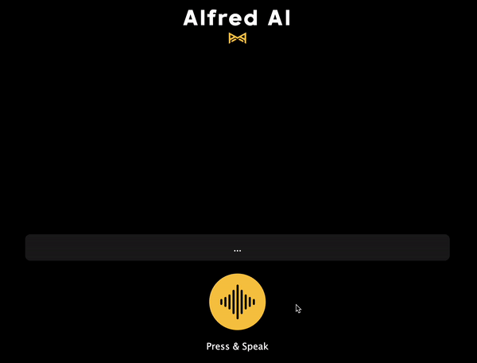
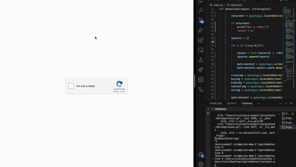

Nicholas Lago
│


Dedicated student with experience as a web development intern and a background in teaching at the college level. Passionate to build a deeper understanding of software development. Eager to implement my skills and collaborate with others to succeed.

Education
22 year old student attending the University of Delaware. Pursuing a Bachelor of Science in Computer Science. Minor in Mathematics. Concentration in AI and Robotics. Expected in May 2025.
Skills
◦ Python◦ Java
◦ C/C++
◦ HTML/CSS
◦ JavaScript
◦ TypeScript
◦ React

Projects │

Colorize
Colorize is an accessibility extension on the Chrome Web Store that
allows colorblind users to distinguish colors by
correcting for their type of color vision deficiency
(Protanopia, Deuteranopia, Tritanopia).
Users can also adjust the saturation of images on the browser.
Made with JavaScript, HTML, and CSS.

Alfred AI
Alfred AI is an AI powered ChatBot using voice control to guide the AI.
Communication works both ways with Alfred responding back in a voice of your choice.
This project implements WebSpeech API, and ChatGPT API. Made with JavaScript, Node.js, HTML, and CSS.

Captcha Robot
Captcha robot that automatically solves Google's ReCaptcha v2 tool.
This project uses machine learning prediction models to detect objects, and
PyAutoGUI library to automate control of the mouse.

Binary Clock
Clock using a binary system to display the real-world time.
Hours, minutes, and seconds are shown as either on or off values.
Made with C, Bash, and Git.
Project for CISC210 Introduction to Systems Programming.

Snake Game
A functioning snake game created with Python using Thonny IDE and designer library. Final project for CISC108 Introduction to Computer Science I.

Drizzle
Listen and identify the daily Drake song in as few tries as you can.
This is a remix of an original project found on Glitch.
I modified the CSS and JavaScript properties on the already coded foundation to make the popular game, Heardle, Drake themed.

Forest Escape
A maze game where you attempt to help the dog reach the end.
This project helped my understanding of object oriented coding and its relation to classes/matrices.
Made with C++.
Project for CISC220 Data Structures.
Portfolio Website
I created this website to learn more about frontend development.
To build this project I taught myself HTML, CSS, and JavaScript.